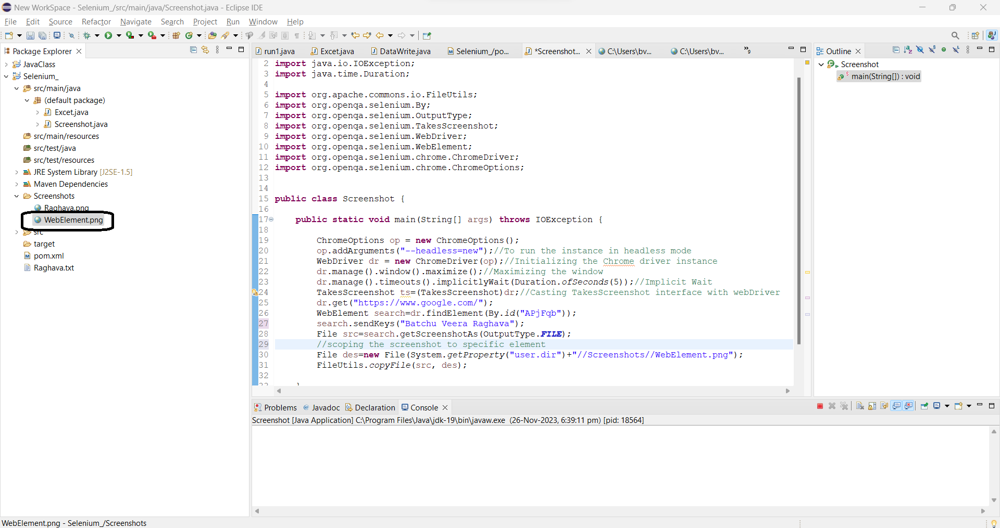

Hi ,Welcome to Selenium tutorials,below we are discussing about three different methods of taking screenshots in Selenium
Taking Specific element screenshot

Hi ,Welcome to Selenium tutorials,below we are discussing about three different methods of taking screenshots in Selenium